$$qf_commondoc_header.start$$ $$qf_commondoc_header.end$$
Contents
- Correlating Data
- Inspecting Data
- Fitting Data
- Inspecting Fit Results
- Getting fit results into other applications
- Performing an alternative fit
$$qf_commondoc_backtop$$
Tutorial
1. Correlating Data
- Perform an imagingFCS measurements (e.g. SPIM-FCS) of some sample of interest in solution. Store the acquired image series as TIFF file and note these acquisition parameters (this will be saved and automatically read from the image metadata if you use the QuickFit SPIM- or a compatible plugin!): pixel size in nanometers, framerate or frametime
Also perform a background measurement, i.e. a measurement with the same settings (but fewer frames) with the excitation lasers switched off. Usually one such measurement per settings and day is enough, but better perform one right before each measurement to ensure compensation for changing lab illumination and camera drift over the whole day.
If you don't have an imagingFCS setup (yet), you may also use the testdata provided under $$assetsdir$$/plugins/imaging_fcs/imfcs_testdata/beads_no9_0.86nM_5mW_000.tif for this tutorial. The acquisition data of this dataset was:
- acquired on a SPIM. The lightsheet had an 1/e2-halfwidth of 1.2µm.
- pixelsize: 400nm (in the object plane, i.e. using a 60x/NA1 detection objective and an Andor iXon X3 860 camera with 24µm pixels)
- framerate of 1785.7fps (i.e. a frametaime of 560µs)
- The sample were 100nm diameter FluoSpheres YG (green fluorescent microspheres) in water @25°C
For this tutorial we will assume that you use this dataset and all the images shown are from this dataset.
- start a new QuickFit project (e.g. by starting a new instance of QuickFit).
- Click on "Data Items|Insert Raw Data|imFCS|correlate images and insert". A Dialog like this will pop up: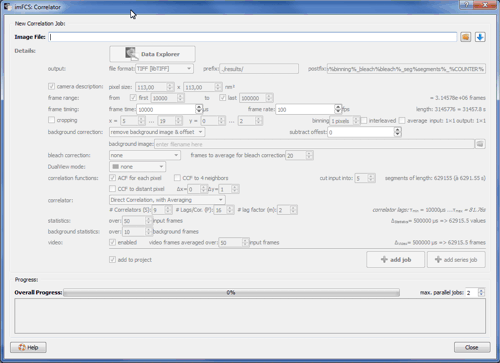In the top right corner click on
 to select an input file. and select the file $$assetsdir$$/plugins/imaging_fcs/imfcs_testdata/beads_no9_0.86nM_5mW_000.tif. In the file-selection dialog, select the "libtiff" filter.
to select an input file. and select the file $$assetsdir$$/plugins/imaging_fcs/imfcs_testdata/beads_no9_0.86nM_5mW_000.tif. In the file-selection dialog, select the "libtiff" filter.
- Now the imagingFCS plugin will analyse the file and read some metadata (pixel size, framerate, ...) which is stored in the file beads_no9_0.86nM_5mW_000.ini in the same directory. This file is created by the B040SPIM plugin along with the measurement. If you use a different data acquisition software, you will have to enter this metadata by hand:
- activate "camera description" and enter the pixel size (in the object/sample plane) in nanometers
- enter either the framerate in frames/second (fps) or the frametime (1/framerate) in microseconds. If you enter the second, do NOT simply enter the exposure time, as usual cameras need additional time to read the frame.
Now the dialog should look like this: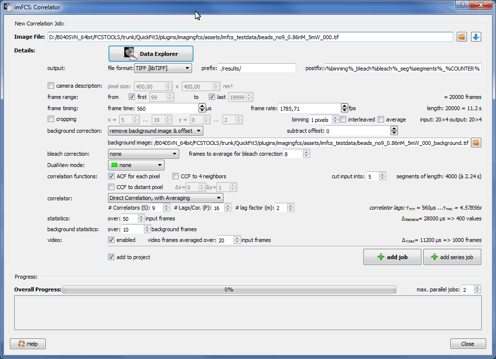
- In this step we will have to configure the correlator to perform the tasks we want. To do so, follow these steps:
- file format: First we have to check whether the correct file reader is choosen: We have a TIFF image series, so we can choose from libtiff (which is able to read also compressed TIFF files, but at most 65000 frames) or tinyTIFF (which reads an arbitrary number of frames, but only from simple files without compression). For this tutorial, choose: libTIFF.
- output filenames: The correlator will create a bunch of output files: several overview/average images, a binned video, correlation data, configuration files ... These will be saved under a directory and names that you can specify in the output line of options using the "prefix" and "postfix" fields. The output filenames will be composed as follows:
A usual choice (also for this tutorial) is:
prefix: ./results/
postfix: _corr%correlator%_back%backcorrection%_bin%binning%_bleach%bleach%_seg%segments%_%COUNTER%
So all files will be created in a subdirectory results of the directory, the input file resides in. To the input filename, some additional information is attatched: All the strings between % will be replaced with appropriate information (here the correlator type, the type of background correction, the binning, the type of bleach correction and the number of segments the measurement is split into. The %COUNTER% will be replaced by an increasing number, i.e. the correlator searches the output directory for any file with the same name and then increases the counter until no match is found. This prevents you from erroneously overwriting data. In the prefix, you can enter any number of directories, they will all be created by the correlator, if they do not exist!
In this example the output filename after the correlation might be:
./results/beads_no9_0.86nM_5mW_000_corrdirectavg_backimgoffset_bin01_bleachnone_seg3_001.autocorrelation.bin
You see the red input filename, the blue metadata from the %...%-strings (explanation of the settings, see below), the magenta counter value and the green part that distinguishes different output files.
- frame range: We want to correlate all 20000 frames in the file, so we activate both checkboxes in the "frame range" line. If you want to correlate only a subrange, uncheck on and enter the first and last frame you want to correlate.
- cropping: Here you can enter a subregion of the full image, if you want to correlate only that. For this tutorial, just deactivate it.
- binning: As we do not want binning, we enter 1 pixel binning, i.e. no binning. If you want binning, you can specify your type of binning here.
- background correction: The plugin already selected the correct background file (beads_no9_0.86nM_5mW_000_background.tif) and entered it for us. If not, select an appropriate background file (i.e. a short measurement of 100-2000 frames with the acquisition settings, but the illumination switched off). This will be used to correct for a varying background signal over the sensor. Also select remove background image & offset from the drop-down list, but enter an offset of 0, as the background frame already contains this offset. The offset is added by the camera to prevent <0 ADU values. If you do not have a background file, just enter the offset of your camera, but note that a varying background is not corrected then.
- bleach correction: For this measurement we do not need bleach correction, so choose none
- DualView: Also we didn't use a DualView, so select none here.
- correlation functions: Here we have to select, which correlations the correlator should calculate: Fot his tutorial we only select ACF, which calculates an autocorrelation function for each pixel. The other options will calculate pixel-pixel crosscorrelations: To the neighboring 4 pixels or over a given distance Δx, Δy. Here you can also choose into how many runs/segments the correlator should split the input data. For this tutorial, select 3, which will cut the 20000 input frames into three segment with 6666 frames each. The correlator will calculate one ACF per segment and then average over all three ACFs. So for every pixel we will use this average and the according standard deviation as measured data.
- correlator: Now you will have to choose the appropriate correlator. For nearly all cases, the Direct Correlation, with Averaging is the right choice. It resembles a standard multi-τ correlator with intrinsic triangular smoothing. The parameters P should be set to 16 and the parameter m to 2. Then you can choose the parameter S to get a still meaningful maximum lag time. In this example, settings S=8 will result in a lag time range of 560µs...2.2848s, which well covers the segment length of 3.73s. Lag times longer than the segment length will be cut automatically and a rule of thumb says that if your desired maximum lang time is $$math:\tau_{max}$$, your measurement should be at least $$math:10\cdot\tau_{max}$$ long.
- statistics/background statistics: Enter 10 frames in both cases for this tutorial, so the plugin will average over 50 frames to create some additional overview statistics (average frame intensity, ...)
- video: activate this function and enter 20 frames. This wilöl cause the plugin to create a video in which every frame is an average over 20 input frames.
- finally make sure that "add to project" is checked, if not you will have to load the correlation result into QuickFit manually later.
- Now we are left with clicking on "add job", to start the process of correlation. Our job will be added to the list at the bottom and will be processed in the background. You can now define your next job and also add it to the list ... You can also specify the maximum number of jobs to process by changing "max. parallel jobs" on the rhs. After the job finished without errors, a green check symbol will appear next to it: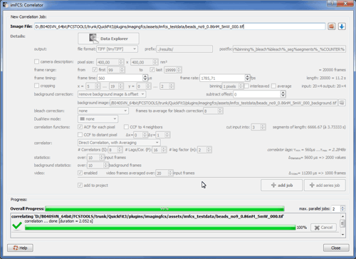
Now we can click on "Close" and the plugin will add the correlation result to the current (new) project:
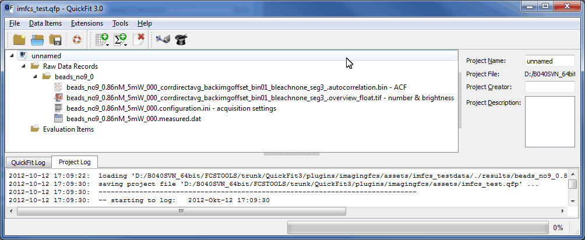
If this is the first data you add to a new project, QuickFit will now ask you to save the project. Do so to prevent any dataloss.
The project now contains four records:
- The autocorrelation data: "beads_no9_0.86nM_5mW_000_corrdirectavg_backimgoffset_bin01_bleachnone_seg3_.autocorrelation.bin - ACF"
- A number&brightness record: "beads_no9_0.86nM_5mW_000_corrdirectavg_backimgoffset_bin01_bleachnone_seg3_.overview_float.tif - number & brightness"
- The acquisition settings: "beads_no9_0.86nM_5mW_000.configuration.ini - acquisition settings" (only present if you had the file beads_no9_0.86nM_5mW_000.ini)
- The measured data: "beads_no9_0.86nM_5mW_000.measured.dat" (only present if you activated this option in the B040SPIM plugin during acquisition)
For this tutorial we will only need the first record, containing the autocorrelation curves.
$$qf_commondoc_backtop$$
2. Inspecting Data
- One remark, before we start: We will see plots in several places in QuickFit. These are created usually using the same type of widget, so you can interact with them generally in the same way (sometimes, some functions might be switched off, so don't wonder in those cases ;-). The most important features are:
- You can zoom by dragging open a rectangle or by using the mouse-wheel.
- If you move the mouse over the plot, the current position is usually displayed on the top-left corner of the plot (in some plugins this display is moved somewhere else on the screen, but usually close to the plot).
- If you move the mouse over the top left corner area of the plot (also above the top of the position display), a submenu will pop up: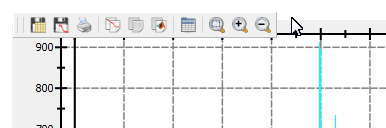Here you can save, print and copy the current plot as images, save/copy/inspect the data used for the plot and zoom into/out of it.
- Double-click on the ACF-record in the main window. A new window "Raw Data ..." will open up. On the first page you can see the name, folder and description, which you can also edit any way you want. The name is the name also displayed in the project tree and in "folder" you can enter any (hirarchy of) folder(s), separated by a slash '/'. The record will be displayed in this subfolder in the project tree. For now we leave everythig as it is.
Below these input widgets, you see the list of files loaded into this record. At the top there are a bunch of files in the ./results/ subfolder that we created. These are the correlation output files created by the correlator. A right-click will open a submenu that allows you to go to the folder in which any of the files resides. If you do so for a file in the ./results/ folder, you will see something like this list of files: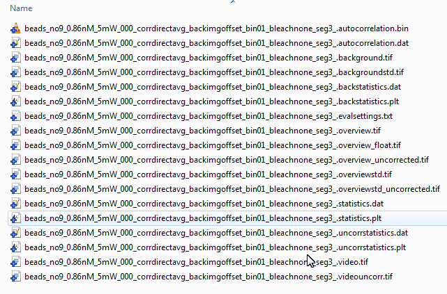
The .autocorrelation.* files contain the ACFs, the .back* files contain the averaged background frame and background statistics, the .overview* files contain the same for the input image series average. The file .statistics.dat contains the frame statistics as CSV and the files .video.tif and .videouncorr.tif contain the video after and before background&bleach correction. Finally the file .evalsettings.txt summarizes the settings you used for the correlator (see major step 1 of this tutorial).
- Now open the tab "Images, Videos, Timetraces":
 Here you can inspect several overview images and videos on the left (e.g. the time-binned video), the averaged background series, possibly overview images taken before and after the acquisition, ... Just select the image you want to see from the drop-down list "image/video" and it will be displayed in the sub-tab "Image/Video". If you switch to the tab "Histogram" you will see a histogram of the data in the image. You can also select a subregion in the first tab (using the rectangle, circle, ... buttons above the image). The histogram of the selection will be overlayn to the complete histogram. On the right hand side you can inspect the statistics created by the correlator. Note that the average and standard deviationn displayed here are the statistics calculated over ALL pixels in the frame and then over the selected number of frames (was 10 here). So the standard deviation is NOT the standard deviation of a single pixel, but tells you how the pixel intensity is distributed over a single image! If you want to know the standard deviation of a single-pixel timeseries, select the standard deviation overview image. Here every pixel represents the stadard deviation of the timeseries of this pixel.
Here you can inspect several overview images and videos on the left (e.g. the time-binned video), the averaged background series, possibly overview images taken before and after the acquisition, ... Just select the image you want to see from the drop-down list "image/video" and it will be displayed in the sub-tab "Image/Video". If you switch to the tab "Histogram" you will see a histogram of the data in the image. You can also select a subregion in the first tab (using the rectangle, circle, ... buttons above the image). The histogram of the selection will be overlayn to the complete histogram. On the right hand side you can inspect the statistics created by the correlator. Note that the average and standard deviationn displayed here are the statistics calculated over ALL pixels in the frame and then over the selected number of frames (was 10 here). So the standard deviation is NOT the standard deviation of a single pixel, but tells you how the pixel intensity is distributed over a single image! If you want to know the standard deviation of a single-pixel timeseries, select the standard deviation overview image. Here every pixel represents the stadard deviation of the timeseries of this pixel.
- Now open the tab "Countrate/Intensity Trace":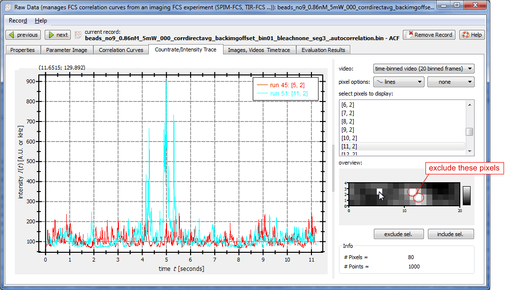 Here you can inspect the (averaged, as in the video ... this is actually the video data) timetrace of each pixel, by selecting it in the overview image in the bottom right corner, or in the list above. To select several pixels, keep the key Ctrl pressed and click on the pixels one after the other. If you find pixels here that are erroneous (e.g. because there was an aggregate), you can select them and click on "exclude sel." to exclude them from the evaluation. We do this now for the two brightest pixels, where we can easily see the aggregate peaks in the timetrace (see the two circles in the screenshot above).
- The final tab that can be used to inspect data is "Correlation Curves":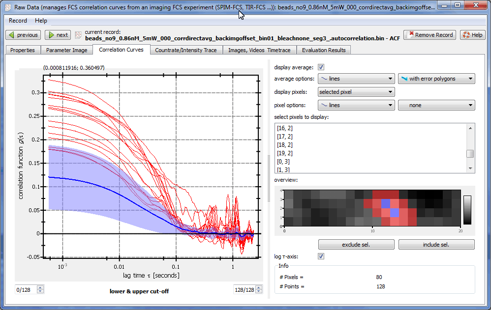This tab is used the same way as the "Countrate/Intensity Trace" tab, but it shows the correlation curves acquired for each pixel.
In blue you see the average (and standard deviation) of all non-excluded correlation curves. The two curves we excluded in the last step are marked blue. If you click on one of these two pixels, you will see that the curve really deviates much from the average:
 By inspecting the other pixels surrounding the xcluded pixels, we find more that are deviating. We will now select all these pixels keeping Ctrl pressed (blue in aboves screenshot) and also exclude them. Doing this the average is changed significantly:
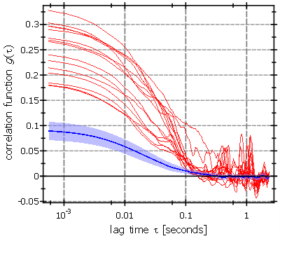
To find the reason for these deviations, we can go back to the "Images, Videos, Timetraces" tab and once again inspect the video. There we observe two large aggregates moving through the region with the deviating pixels around t=4s and t=5s. They are also visible in the intensity timetrace on the right of the video.
By inspecting the other pixels surrounding the xcluded pixels, we find more that are deviating. We will now select all these pixels keeping Ctrl pressed (blue in aboves screenshot) and also exclude them. Doing this the average is changed significantly:
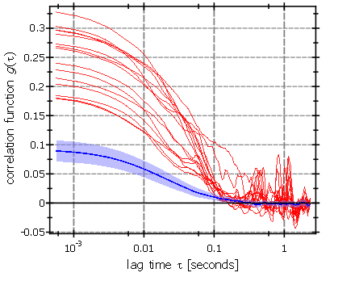
To find the reason for these deviations, we can go back to the "Images, Videos, Timetraces" tab and once again inspect the video. There we observe two large aggregates moving through the region with the deviating pixels around t=4s and t=5s. They are also visible in the intensity timetrace on the right of the video.
$$qf_commondoc_backtop$$
3. Fitting Data
- So we excluded all (on a first view) unusable pixels. So we can step on to fitting a model to the data. To do so, we close the raw data record window and click "Data Items|Insert Evaluation|imagingFCS Curve Fitting" in the main window. A new entry in the project tree appears under "evaluation items". Double click this entry:
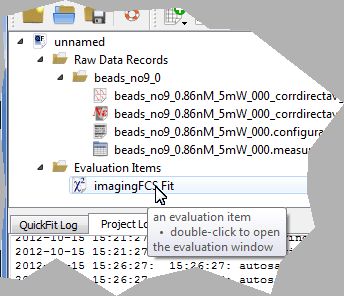
- A new window "imagingFCS Fit" appears:
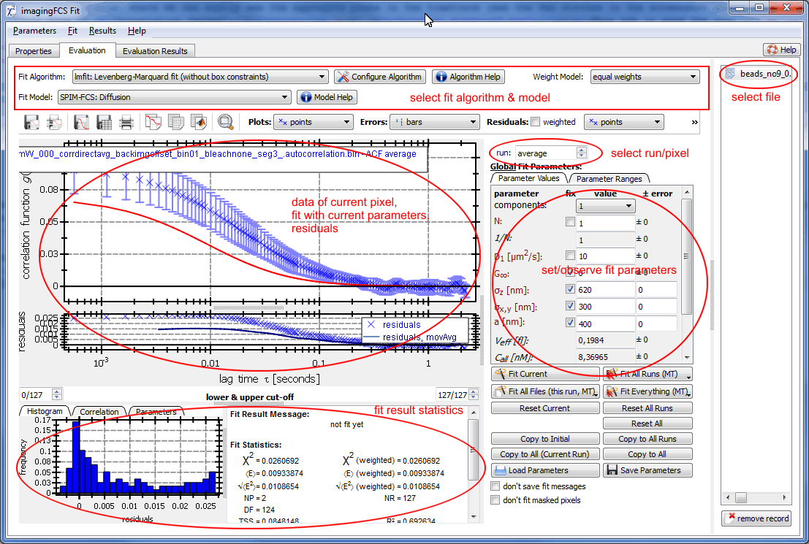
Here you can perform a fit to all pixels of the image and inspect the fit results. The basic functions you can perform are:
- view the correlation function in each pixel and select a pixel with the "run" field.
- below the correlation plot you see the residuals for the current fit and on the rhs the fit parameters. These can also be edited by the user.
- below the resdiuals plot you can set the range from the correlation function that should be used for the fit ("lower & upper cut-off").
- on the bottom the fit and resdiuals are further evaluated to yield several fit statistics.
- above the plot there are several buttons to print/save and copy the plots (and it's data).
- First we select a fit algorithm and model. As algorithm, lmfit is a good choice, as it is reasonably fast and yields good convergence. As model, we choos SPIM-FCS: Diffusion which describes the FCS correlation function for a rectangular pixel. Click on "Model Help" to get more information on the fit model.
- Now we have to select the weight model per run errors, which takes the errors from the standard deviation calculated from the segements we cut the image series into in step 1.5.10. The other options are: equal weights uses no weighting for the fit and standard deviation uses the standard deviation calculated from all pixels as weight (so the weights are the same for all pixels!).
- The next step is to find good estimates for the parameters of the fit model. This can be done in the fit parameters list on the rhs of the correlation function plot. The model we choose has six free parameters (particle number N, diffusion coefficient D1, the offset G∞, the lateral and logitudinal PSF half-widths (1/√e width) σx,y, σz and the pixel size a). Each parameter can be fixed with the check box in its row. For the purpose of this tutorial we fix all parameters except N and D1. The values of the other parameters has to be estimated by a calibration. Here we use these paramaters:
- a=400nm is obtained from pixel_size/magnification = 24µm/60 = 400nm. Note that this value is read from the PIXEL_WIDTH or PIXEL_HEIGHT properties of the selected raw data record.
- The values σx,y=340nm, σz=600nm were obtained from a calibration for this microscope.
The initial parameters for N and D1 can einther be entered by hand, or be estimated by a fit to the current (average) run. We choose the second option, so we:
- Click on "Fit Current", which starts the fit using the current parameter values as starting values. The parameter widgets will be updated with the results of the fit: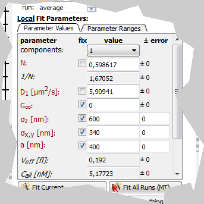
Note that the label above the parameters now reads "Local Fit Paramaters", which means that we have a fit result for this run/pixel. Before it read "Global Fit Paramaters". If you cange the run from -1/"average" to 1, it will change back to the global parameters and also the parameters will be back to the ones we choose before.
- So we have to copy the fit results to these global settings, as these will be used as start values for the other pixels. This can be done by clicking "Copy to Initial" (make sure the run is again -1/average).
- Now we can fit the Rest of the pixels by clicking "Fit All Runs (MT)" (MT stands for multi-threaded, so the fit will use two or more parallel threads to make use of modern computers with several CPU cores!).
$$qf_commondoc_backtop$$
4. Inspecting Fit Results
- Now the data fitting is complete and we can inspect the fit results. Of course this is also possible in the "imagingFCS Fit" window on a per pixel basis, but as we want to do imagingFCS, we want to look at the fit parameters as an image. This can be done by opening the raw data record window again (see chapter 2) and the opening the "Parameter Image" tab:
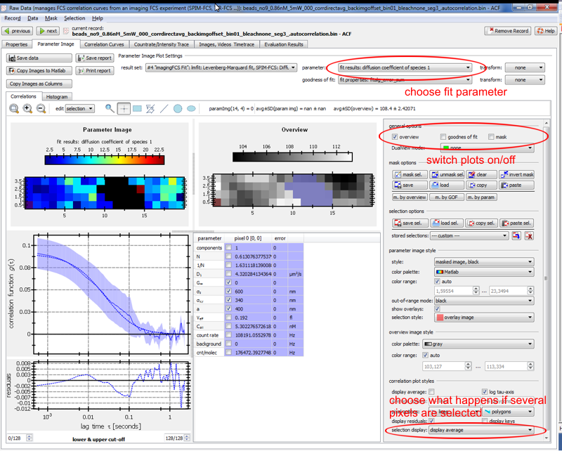
- First we have to choose the parameter, we want to view in the field "parameter" at the top (here diffusion coefficient of species 1). Then we see several image plots in the first row:
- "parameter image" is an image of the selected parameter
- "goodnes of fit" (can be switched off wit the checkbox on the rhs) shows the "goodness of fit parameter" selected below the fit parameter, usually the fitalg_error_sum, which is the sum over all squared residuals or as it is often refered to χ2. This parameter helps to find out where fits went wrong
- "Mask/Selected" (can be switched off wit the checkbox on the rhs) shows which pixels are currently excluded/masked and which pixels are selected
- "overview" shows the average intensity during the measurement
- Plot options: You can choose how the plots look on the rhs of the plots. Several options (color palettes, ranges, ...) allow to alter the appearance of the plots. These settings will be saved per parameter, so if you choose to select the particle number as parameter, set something there and return to the diffusion coefficient, the settings you last used for this parameter will be restored.
- Pixel Selection: As we already excluded some pixels in chapter 2, these are "black" in the parameter image plot and marked blue in the overlay. The currently selected pixels are marked red. Below the parameter image the correlation curve and fit results for the currently selected pixels is shown. To select another pixel, just click on the pixel in any of the images. You can also select a larger set if pixels by choosing one of the selection tools above the images, or by clicking several pixels and keeping Ctrl pressed.
If you have selected a few pixels (e.g. on the left of the image), the plot below will show an average over the selected correlation curves and the fit result will disappear. The table now shows the statistics of the fit parameters in the selected region. If you want to see all single pixel correlation curves, you can change the setting of the "selection display" dropdown list (see bottom right of the screenshot above). NOte that the fit parameter statistics are calculated from all pixels that are selected, only omitting those that were masked/excluded before!
- If you are interested in the distribution of the fit parameters in more detail, switch to the Histogram tab above the parameter image. The plot there contains the histograms of all pixels ("complete") and the selected pixels ("selection"). Also boxplots are shown to indicate the statistics, as noted in the table on the right of the plot: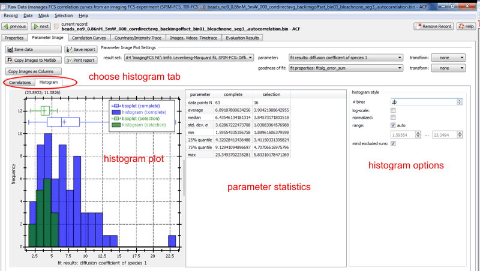
Note that these histograms are calculated for all non-excluded/non-masked pixels. So if you masked some pixels they will be omitted when calculating the complete and the selection histogram!
- Changing the masked pixels: We now want to see how the pixels that we initially excluded/masked look like. So far they are not visible, so we will clear the mask. As we maybe want to restore this mask lateron, we first copy it to the clipboard by clicking "Mask|copy" in the menu bar. Now we can use the entry "Mask|clear" to clear the mask. The resulting parameter image should look something like this:
 The pixels that were masked before show a much too high diffusion coefficient and if we click on them/select one of them, the failed fit can be seen in the plot below. Again we now select those pixels that seem erroneous to us (click and keep Ctrl pressed). They are now marked red and selected, but not yet masked. This can be done by clicking "Mask|mask sel." in the menubar. Note how the colorscale immeadiatley adapts to the new selection. We can also go back to the old selection, by pasting it ("Mask|paste").
The pixels that were masked before show a much too high diffusion coefficient and if we click on them/select one of them, the failed fit can be seen in the plot below. Again we now select those pixels that seem erroneous to us (click and keep Ctrl pressed). They are now marked red and selected, but not yet masked. This can be done by clicking "Mask|mask sel." in the menubar. Note how the colorscale immeadiatley adapts to the new selection. We can also go back to the old selection, by pasting it ("Mask|paste").
- There are several more options to change the mask and selection, so just play with them to get used to them.
- back to fitting: If you are not happy with a fit, or want to change some parameters, you can always go back to the imagingFCS Fit evaluation window and redo the fit. The old results will the be overwritten with the new ones. Note that in these cases it sometimes makes sense to delete the old fit results and start all over. This can be done in the imagingFCS fit by choosing "Parameters|Clear all Runs" to clear all results in the current file or "Parameters|Clear all" to delete all results from this evaluation item in all files.
$$qf_commondoc_backtop$$
5. Getting fit results into other applications
This last chapter will explain how you can copy/save to fit results and images in QuickFit to use them in other programs: E.g. PowerPoint to prepare a talk or Matlab/Origin/Excel to perform further evaluations. All data is stored in the QuickFit project file, so loading an old project will bring all your data back, but this project file can not easily be read by other applications, so QuickFit provides several functions to copy data somehwere else:
- In the toolbar of each plot (appears if the mouse hovers above the to of the plot), you can save or copy the data used to draw this plot. Saving is possible to CSV (Comma-Separated Values) and e.g. SYLK which are both formats that can be imported into virtually any scientific plotting or spreadsheet program. It is also possible to save the data as Matlab script, which will create a textfile that can be evaluated by Matlab and will contain the data columns as vectors, e.g.:
% data from columne 1 ('fit results: diffusion coefficient of species 1')
fitresultsdiffusioncoefficientofspecies1 = [ 4.32028 5.40306 4.70707 2.92556 6.96055 9.03536 1.59554 6.17108 6.46627 4.2663 4.40336 8.42656 47.0388 42.5537 15.1165 4.68732 9.12941 6.00953 8.17989 8.79819 4.0093 4.86159 3.68723 3.38523 4.49103 5.42139 6.43546 6.86087 12.8799 3.63282 4.34538 4.3388 6.51969 21.612 25.4556 6.6003 5.84281 12.1432 10.5204 1.74603 3.81107 1.88962 2.33165 3.8804 4.40322 6.6043 9.31004 9.35882 9.38462 15.7091 17.689 3.52824 9.45614 16.8878 23.3494 7.45894 8.06272 11.3493 11.4806 10.4379 3.73272 3.4115 5.8331 4.27815 6.86177 12.1073 9.26225 3.69538 5.01276 9.08805 9.59082 8.04201 12.6439 7.42807 9.25678 7.4055 6.18671 8.83876 14.4249 8.67576 ];
% data from columne 2 ('selection')
selection = [ 0 0 0 0 0 0 0 0 0 0 0 0 0 0 0 0 0 0 0 0 0 0 0 0 0 0 0 0 0 0 0 0 0 0 0 0 0 0 0 0 0 0 0 0 0 0 0 0 0 0 0 0 0 0 0 0 0 0 0 0 0 0 0 0 0 0 0 0 0 0 0 0 1 0 0 0 0 0 0 0 ];
% data from columne 3 ('mask')
mask = [ 0 0 0 0 0 0 0 0 0 0 0 1 1 1 1 0 0 0 0 0 0 0 0 0 0 0 0 0 0 0 1 1 1 1 1 0 0 0 0 0 0 0 0 0 0 0 0 0 0 1 1 1 1 1 1 0 0 0 0 0 0 0 0 0 0 0 0 0 0 0 1 1 1 0 0 0 0 0 0 0 ];
- Data can be copied from the tables used in QuickFit by selecting the cells of interest and the clicking the right mouse button. This will open a context menu where you can choose how to copy the data (either with row/column headers, the default, or without).
- The "Parameter Image" tab of the imFCS raw data record has additional options available in the menubar:
- Data|Save Data: saves the four data images in different file format. You enter a filename <name>.<ext> and the images will be saved as <name>.param.<ext> for the parameter image, <name>.gof.<ext> for the goodnes of fit image, <name>.mask.<ext> for the mask and <name>.overview.<ext> for the overview image. These files can then be used in other applications.
- Data|Copy Images to Matlab: copies the four data images as Matlab script to the clipboard
- Data|Copy Images as Columns: copies the data for the four images as a four column table to the clipboard. Use this to e.g. create a correlation plot, by plotting two of the columns of two parameters against each other.
- Data|Copy Fit results statistics: When actiavted a dialog allows you to select some parameters and some statistical parameters to calculate for these. After choosing "OK", the parameter statistics will be calculated and copied in the specified format as table to the clipboard.
- Data|Insert Correlation Curves as new RDR into project: This option will take the currently selected correlation curves and create a new FCS raw data record in the project that will contain only these curves as runs. This option allows you to evaluate a sub-selection of curves from the image separately
- Evaluation Results Tables: The fit results are summarized as Evaluation Result Tables in the tab "Evaluation Results" of the raw data record (listing all results from all evaluation for the current raw data record) and the evaluatio item (listing the results created by the item for all raw data records):
- raw data record: each row contains one result and the columns are the sets of results (note that the imagingFCS fit will create two columns, one for the average over all pixels (ends with _runavg) and one for the single-pixel results. The latter contains contains a "... vector" for each parameter (i.e. one value per pixel as a list). When you select some cells and choose one of the options in the "Results" menu, the selected cells will be copied to the clipboard. Note that the "vector" cells will only be copied if you select "value+error pairs" or "median+g25+g75". If you want to get a table containing all values of the vectors, you have to use "Results|Save all Results to File".
- evaluation item: This table works the same as the raw data record table, except for the selection of data, as described above. Also here the columns contain the fit results and the rows the raw data records/files evaluated for them.
NOte, you can filter both tables by entering phrases (e.g. "diffusion" to show only thise rows/columns containing the word "diffusion" in their header) into the filter widgets above the tables.
$$qf_commondoc_backtop$$
6. Performing an alternative fit
Sometimes you might want to compare fit results of different models. This is also possible with the imagingFCS plugin, as the results of a fit are stored on a per evaluation item basis. To demonstrate this, follow these steps:
- add another "imaging FCS Fit" evaluation item to the project and open it.
- choose the model "FCS: Normal Diffuson, 3D" now, which is a model assuming a gaussian focus, not the PSF of a rectangular pixel.
- The parameter estimates axial ratio γ=2 and lateral half-width wx,y=700nm are good for this dataset. Also you can choose 0 non-fluorescent vomponents, as we did not observe any photophysics or reactions in our sample (just simple beads in solution).
- After performing the fit, return to the raw data record. Now you can select the second set of fit results at the top of the "Parameter Image" tab:
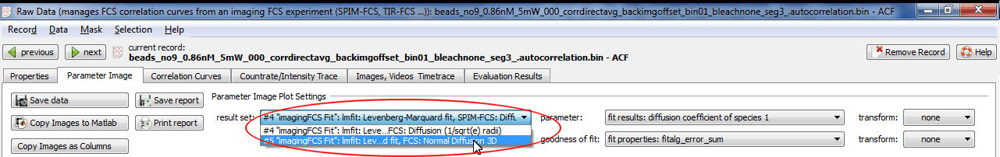
This new set of results will also appear in the "Evaluation Results" tab!